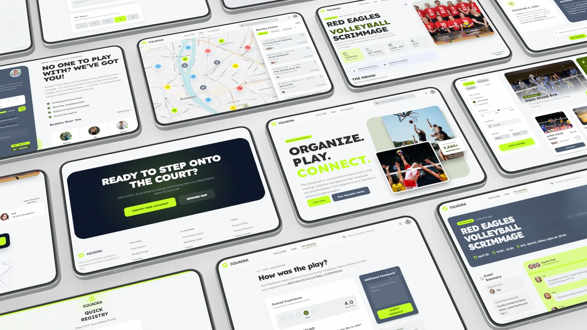
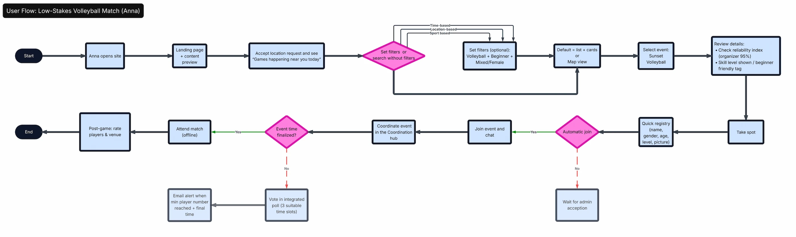
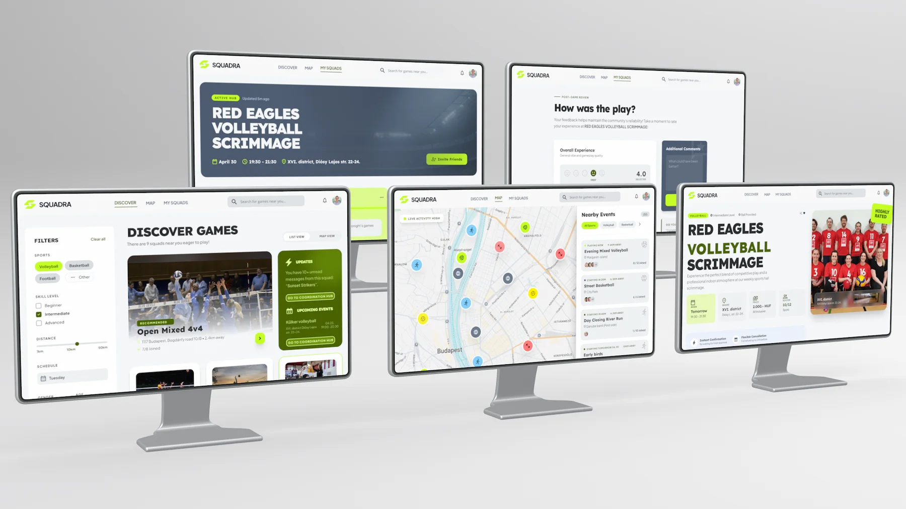

FOCUS ON KIDS AND PROS
Most sports clubs are either for kids or for people who already compete. If you’re an adult who just wants to try something new or play for fun, there’s not much out there.
- TARGET HOBBY PLAYERS
- FILTER BY LEVEL, AGE, GENDER

Need one more player for Sunday’s volleyball game? Want to play basketball but don’t know where to find a team? Or thinking about going to the gym but too scared to start alone? Squadra connects hobby players nearby, especially beginners.
If you want to play sports just for fun, it’s surprisingly hard to find people to play with. Sport clubs usually expect you to already be good and ready to compete, which puts a lot of beginners off.
So most hobby players end up in Facebook groups. But posts get lost in the feed, you can’t filter games by location or level, and since nobody is really accountable, people often cancel at the last minute. Organising a simple game is far more stressful than it should be.
With my project I want to change how we look at hobby sports.
“How might we make participating in hobby sports more accessible, easy, organised, and socially connected?”
Four problems I found in my research, each with the design opportunities it opened up.
Most sports clubs are either for kids or for people who already compete. If you’re an adult who just wants to try something new or play for fun, there’s not much out there.
Games are posted all over the place: Facebook groups, club websites, random forums. If you’re new, you don’t even know where to start looking.
Many groups have played together for years, and it shows. Turning up alone as a beginner feels awkward, especially if you have never played before.
Organisers chase people in group chats, book venues, collect money, keep count of who’s coming and who brings what equipments. Then someone cancels an hour before and it all falls apart.
busy beginner sport enthusiast
easily find and join local hobby sports groups with people of similar skill levels
I can try out and enjoy low-stakes sports in a stress-free social setting.

Follow Anna from opening the site to rating her first game: she finds a beginner-friendly volleyball match nearby, joins in a few clicks and sorts out the time with the others.


The phone screens show the landing page. The desktop ones walk through finding a game, the map, an event page, the group's coordination hub and rating the game afterwards.


KEY INSIGHT
“The biggest challenge was the cold-start problem: when there are only a few users, there are only a few games, so newcomers leave before the community can grow. That’s why I turned Squadra into a website instead of an app early on. People can open it straight from a link, without downloading anything.”
This project strengthened my ability to design with a problem-solving mindset, not just for looks. It also helped me practise empathy by designing for people outside my own experience.
Once a game is set up, groups tend to move to WhatsApp or Messenger to sort out the details. For people to keep coming back, Squadra has to cover everything they’d do there: chatting, voting on a time and checking who’s bringing what.
I expected the main problem to be a lack of interest in sports. But what really holds beginners back is fear: of not being good enough, or of showing up alone among strangers. Design has to address that feeling first and create a sense of belonging.
Great screens don’t matter if nobody uses them. Like the Gestalt principle says, the whole is more than its parts: the platform only works when every step, from joining to coming back, fits together.
Have a project, idea, or opportunity in mind? I'd love to hear about it.
START A CONVERSATIONBudapest, Hungary & Remote worldwide